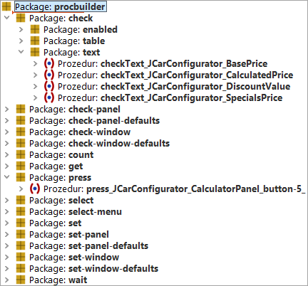

| Version 6.0.3 |
Am Beginn eines typischen QF-Test Projektes werden die ersten Schritte aufgezeichnet und auch meistens erfolgreich ausgeführt. Nach den ersten Erfolgen und einigen solcher Aufnahmen bemerkt man, dass einfaches Aufnehmen oder ein Kopieren/Einfügen Ansatz einige Probleme bereiten, die Tests wartbar zu halten. Denken Sie nur an eine Änderungen im Haupt-Panel des Workflows. In diesem Fall muss beinahe jeder Test angepasst werden. Wegen solcher Probleme empfehlen wir, die Tests modularisiert zu entwickeln und Prozeduren und Variablen einzusetzen. Für eine genauere Beschreibung modularisierter Testentwicklung siehe Abschnitt 8.5.
In Projekten, die eine große Menge an Dialogen und grafischen Elementen beinhalten, ist es mitunter empfehlenswert, solche Prozeduren in komponentenspezifische Prozeduren, z.B. "Klicke Button OK", und in eigenständige Workflow Prozeduren, z.B. "Ein Fahrzeug anlegen", aufzuteilen. Dieser Ansatz ermöglicht es, dass neue Testfälle relativ schnell angelegt werden können, jedoch müssen vorher diese Basisprozeduren erstellt werden.
QF-Test liefert den Procedure Builder, der genau diese Basisprozeduren automatisiert erstellt. Wenn Sie diesen Procedure Builder verwenden, wird sich die Zeit für Aufnahme und Erstellung der Prozeduren für die grafischen Elemente drastisch verkürzen. Damit kann sich der Tester auf seine eigentliche Aufgabe, Testfälle zu erzeugen und zu planen bzw. Testdaten bereitzustellen, konzentrieren.
Um die Basisprozeduren automatisiert zu erzeugen, müssen Sie folgende Schritte ausführen:
Nun sollten Sie die neu erstellten Packages unter den 'Prozeduren' Knoten der aktuellen
Testsuite, in der Sie die Aufzeichnung gestoppt haben, finden. Diese Packages beinhalten die erstellten Prozeduren für
die Komponenten. Standardmäßig wird ein Package procbuilder erzeugt. Falls dieses schon existiert, wird
ein Package procbuilder1 erzeugt und so weiter. Wenn Sie dieses Package öffnen, finden Sie weitere Packages
für bestimmte Funktionen wie check, get, select, wait etc..
Diese beinhalten die Prozeduren für die Komponenten, welche Sie aufgenommen haben. Unter dem check Package
finden Sie noch eine weitere Ebene für unterschiedliche Checkarten. Diese Struktur ist die Standardstruktur, welche Sie allerdings
anders konfigurieren können. Eine Beschreibung hierfür finden Sie im nächsten Abschnitt.
|
|  | ||
|
| Abbildung 24.1: Aufgezeichnete Prozeduren | ||
Die Erstellung der Prozeduren wird über eine Template Testsuite
gesteuert, diese Testsuite finden Sie unter
qftest-6.0.3/include/procbuilderdef.qft. Diese
Datei sollte in ein projektspezifisches Verzeichnis kopiert werden,
falls Sie diese anpassen möchten. Den Speicherort dieser Datei können
Sie dann in den QF-Test Einstellungen unter
Konfigurationsdatei für die Prozedurenaufnahme
konfigurieren.
Die Template Testsuite beinhaltet Prozedurvorlagen für die am meisten verwendeten GUI Elemente und deren Aktionen. Wenn Sie eine eigene Aktion definieren möchten, können Sie einfach eine entsprechende Prozedur einfügen.
Die Testsuite selbst hat eine bestimmte Struktur. Diese Struktur ist im Abschnitt 24.3.1 beschrieben. Die Definition erlaubt es den Tester, Prozedurvorlagen für Komponenten einer bestimmten Klasse zu erstellen oder für Prozeduren, die sich auf alle Elemente eines Fenster bzw. Dialoges beziehen, eigene Prozeduren zu definieren.
Sie finden auch einige Beispielkonfigurationen unter qftest-6.0.3/demo/procbuilder.
Die automatisierte Erstellung der Basisprozeduren liefert je nach Komponenten unterschiedliche Prozeduren. Ein Textfeld benötigt eine Setzen-Methode für den Text, ein Button braucht eine Drück-Methode und ein Fenster benötigt eine Setzen-Methode, die die Setzen-Methoden aller enthaltenen Elemente aufruft etc..
|
|  |
||
|
| Abbildung 24.2: Die Procedure Builder Definitionsdatei | ||
Das oberste 'Package' im 'Prozeduren' Knoten ist der Name
des neuerstellen Packages. Der Defaultname hierfür ist
procbuilder. Falls das 'Package' procbuilder
bereits besteht, wird ein 'Package' procbuilder1
erzeugt usw..
Die nächste Ebene ist die Klassenebene. Hier können Sie ein Package pro Klasse definieren. Das Package benötigt den kompletten Klassenname, wobei jedoch alle '.' durch '_' ersetzt werden, weil Punkte in Packagenamen nicht erlaubt sind. Der Procedure Builder erzeugt die Prozeduren auch für die abgeleiteten Klassen. Falls Ihre Klasse einen '_' beinhalten sollte, dann müssen Sie diesen mit '\_' kennzeichnen.
Die darauffolgenden Ebenen können frei definiert werden, weil diese die Packagestruktur der Prozeduren vorgeben.
Am Ende müssen Sie jedoch eine Prozedur definieren, welche die entsprechenden Schritte beinhaltet.
Sie können auch einige Variablen, z.B. <COMPID>,
in der Definition verwenden.
Variablen, z.B. die aktuelle QF-Test ID der Komponente oder der Komponentenname, können für den Prozedurnamen verwendet werden. Des Weiteren können Sie auf die aktuellen Werte eines Textfeldes oder den aktuellen Status einer Checkbox zugreifen. Es ist sogar möglich, die gesamte Packagestruktur variabel zu gestalten. Für eine Übersicht über alle verwendbaren Variablen siehe Kapitel 52.
| Letzte Änderung: 6.9.2022 Copyright © 1999-2022 Quality First Software GmbH |